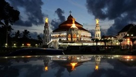

- 


MALAPPURAM
Enclosed by the Nilgiris in the east and the Arabian Sea on the west, Malappuram is a prominent district in Kerala which is commonly known as "the land on the hilltop.With ancient monuments, natural spectacles, and the meandering rivers, Malappuram is a blend of history and heritage. Home to the Zamorins of Kozhikode and legendary poets, writers and artists; the culture and traditions of this region are unmatched. It is an important religious centre for Hindus and Muslims as well.